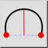

2 จุดและความสูง
แถบเครื่องมือ / ไอคอน:

เมนู:
วาด > ส่วนโค้ง > 2 จุดและความสูง
ทางลัด:
A, H
คำสั่ง:
archeight | ah
คำอธิบาย
วาดส่วนโค้งโดยใช้จุดเริ่มต้น จุดสิ้นสุด และความสูงของส่วนโค้ง
การใช้งาน
พิมพ์ความสูงของส่วนโค้งลงในแถบเครื่องมือตัวเลือกและเลือกทิศทางของส่วนโค้ง (ตามเข็มนาฬิกาหรือทวนเข็มนาฬิกา)
ระบุจุดเริ่มต้นของส่วนโค้ง
ระบุจุดสิ้นสุดของส่วนโค้ง